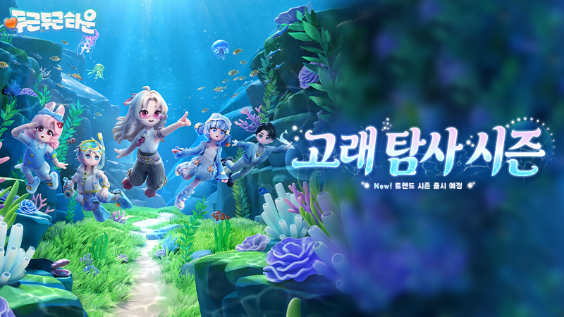

두근두근타운 고래탐사시즌 마감 D-10, 8월 22일까지 챙길 보상 체크리스트
슬슬 달력 보면서 마음 급해지시는 분들 계실 것 같아요. 두근두근타운 트렌드 시즌 「고래 탐사」가 8월 22일 새벽에 끝나거든요. 오늘이 8월 12일이니까 딱 D-10인 셈인데요, 시즌 초반에 열렸던 신맵 '고래낙하 협곡'이랑 해저 메사, 여름 의상, 도감까지 콘텐츠가 워낙 많이 풀렸던 시즌이라 오히려 뭘 챙겨야 할지 헷갈리기 쉽더라고요. 그래서 오늘은 시즌 소개나 공략 말고, 저도 공식 공지 다시 훑어보면서 마감 전에 뭐부터 챙겨야 손해가 없나만 딱 정리해서 회수 체크리스트로 풀어볼게요. 시즌패스 비교나 해저 메사 입장 방법처럼 이미 다른 글에서 다룬 내용은 오늘은 살짝만 짚고 넘어갈게요.

시즌 소개는 다른 글로 미루고, 오늘은 마감 체크리스트만 딱 집중해서 풀어볼게요
이미지 출처: Steam 공식 뉴스(고래 탐사 시즌 공지) · 네이버 본문엔 받아서 재업로드 권장
고래 탐사 시즌, 정확히 언제 끝나나요?
고래 탐사 시즌은 8월 22일 새벽 5시 59분에 끝나요. 게임 서버 시간 기준으로 7월 11일 06:00부터 8월 22일 05:59까지 진행되는 시즌인데요, 여기서 중요한 게 종료 시각이에요. '8월 22일까지'라고만 기억하시면 그날 낮이나 저녁에도 여유가 있을 거라 착각하기 쉬운데, 실제로는 8월 22일 아침이 되기 전, 그러니까 8월 21일 밤이 사실상 마지노선이라고 보시는 게 정확해요.
| 구분 | 날짜·시각(서버 시간 기준) |
|---|---|
| 시즌 시작 | 7월 11일 06:00 |
| 시즌 종료 | 8월 22일 05:59 |
| 오늘 기준 | 8월 12일(D-10) |
트렌드 코인, 안 쓰면 진짜 사라지나요?
아니요, 다 못 쓴 트렌드 코인은 시즌이 끝나도 사라지지 않아요. 시즌이 종료되면 남은 코인이 1대1 비율로 골드로 바뀌어서 우편함으로 들어온다고 안내돼 있거든요. 그래서 '코인 남았는데 지금 급하게 다 써야 하나' 하는 걱정은 안 하셔도 돼요. 다만 진짜 신경 써야 할 건 따로 있어요.
- 트렌드 코인 자체 — 시즌 종료 후 1:1로 골드 전환, 우편함으로 지급(소멸 아님)
- 트렌드 상점(에쥬어)의 시즌 한정 교환 물품(의상·가구·탈것·리액션) — 지금까지 공지된 걸 보면 시즌이 끝나면 더 이상 구매할 수 없는 것으로 보여요
쉽게 말하면 돈(코인)은 남아도 괜찮은데, 그 돈으로 살 수 있는 물건이 사라지는 쪽이에요. 다음 시즌 이후에 다시 풀릴지는 아직 공식으로 확인된 게 없어서, 갖고 싶은 아이템이 있다면 마감 전에 결정해두시는 게 안전해요.
지금 아니면 못 하는 것부터 체크해볼게요
코인이야 나중에 골드로 돌아온다지만, 아래 세 가지는 시즌이 끝나면 진짜로 다시 못 하는 것들이에요.
체크① 고래낙하 협곡 돌고래 먹이주기·친밀도
7월 18일에 고래섬을 찾아온 기간 한정 동물 '돌고래'는, 시즌이 끝나면 볼 수 없게 돼요.
제가 두근두근타운 공식 X 계정 공지를 확인해보니 돌고래는 고래 탐사 시즌이 종료될 때 고래섬을 떠날 예정이고, 시즌이 진행되는 동안엔 고래낙하 협곡에서 돌고래한테 먹이를 주거나 교류하면서 친밀도를 올릴 수 있다고 해요.
아직 돌고래 근처도 안 가보셨다면, 마감 전에 한 번은 들러서 친밀도부터 올려보시는 걸 추천드려요.
시즌 끝나면 돌고래 자체가 없어지니까, 못 해보셨으면 지금이 마지막 기회예요
체크② 해저 메사에서 돌고래 방문·선물 받기
돌고래는 하우징 공간 해저 메사로도 놀러 와요. 방문했을 때 선물도 받을 수 있다고 공지에 나와 있는데, 이것도 돌고래가 고래섬에 머무는 동안만 가능한 이벤트라 시즌이 끝나면 같이 끝나요. 해저 메사를 아직 안 지으셨거나 오래 안 들어가 보셨다면 마감 전에 한 번씩 확인해보시는 게 좋아요.
해저 메사 처음 지어보시는 분은 오픈 가이드 글부터 보시는 걸 추천드려요
체크③ 트렌드 상점 시즌 한정 아이템 구매 결정
위에서 짚었듯 트렌드 상점(에쥬어)의 바다 테마 의상·가구·탈것·리액션은 지금까지 공지 기준으로는 이번 시즌에서만 살 수 있는 걸로 보여요. 매일 랜덤으로 목록이 리셋되는 방식이라, 갖고 싶은 아이템을 이미 봐두셨다면 오늘내일 미루지 말고 뜰 때 바로 챙기시는 걸 추천드려요.
매일 랜덤 리셋이라 봐뒀던 아이템이 계속 뜨는 건 아니더라고요
도감·의상·시즌패스는 이미 다른 글에서 짚었어요
마감 체크리스트만 다루려고 이 글에선 살짝만 짚고 갈게요.
- ✔ 해양생물 도감 다 채우셨나요? 「두근두근타운 고래 탐사 해양생물 도감 지금까지 확인된 것 총정리」 글에서 진행 상황 정리해뒀어요.
- ✔ 여름 의상(해협 홀리데이·바다 탐험기) 획득법은 「두근두근타운 고래탐사시즌 여름의상 해협홀리데이 바다탐험기 획득법 정리」 글 참고하세요.
- ✔ 시즌패스(일반 vs 업그레이드) 뭘 살지 고민이면 「두근두근타운 시즌패스 비교 일반 업그레이드 뭐가 더 이득일까」 글에서 비교해뒀어요.
- ✔ 해저 메사 입장 방법이 헷갈리면 「두근두근타운 고래 탐사 시즌 오늘 오픈 해저 메사 청사진 확정 정리」 글부터 보시는 게 빠를 거예요.
지금부터 뭐부터 챙기면 좋을까요
남은 열흘, 순서를 정해서 움직이면 훨씬 덜 급해요.
- 1순위 — 돌고래부터 챙기세요. 코인이나 상점 아이템은 결정을 늦춰도 되지만, 돌고래는 시즌이 끝나는 순간 고래섬을 떠나니 되돌릴 수 없는 항목이에요.
- 2순위 — 트렌드 상점 한정 아이템 구매를 결정하세요. 갖고 싶은 게 있으면 미루지 마세요.
- 3순위 — 도감·의상 못 채운 부분을 시간 되는 만큼 마무리하세요.
- 4순위 — 트렌드 코인은 마음 편하게 두셔도 돼요. 시즌 끝나면 자동으로 골드가 되니까요.
코인 개수는 미리 한 번 확인만 해두고, 급하게 다 쓸 필요는 없어요
🐋 고래탐사 마감 체크리스트
- 8월 22일 05:59 마감(사실상 8월 21일 밤까지) 기억하기
- 돌고래 친밀도·먹이주기(고래낙하 협곡)
- 해저 메사에서 돌고래 방문·선물 받기
- 트렌드 상점 한정 아이템 구매 결정
- 도감·의상 미완성분 마무리
- 트렌드 코인은 안 써도 골드 자동 전환 — 걱정 NO
자주 묻는 질문
Q. 지금(8월 12일)부터 시작해도 다 챙길 수 있나요?
열흘 정도면 도감·의상까지 전부 완주하긴 빠듯하지만, 돌고래나 트렌드 상점 한정 아이템처럼 시즌 끝나면 아예 못 하는 것들은 지금 시작해도 충분히 챙길 수 있어요.
Q. 트렌드 코인은 골드로 바뀌면 바로 쓸 수 있나요?
우편함으로 들어온다고 안내돼 있어서, 받은 뒤 우편함에서 직접 수령해야 쓸 수 있을 것 같아요. 정확한 지급 시점이나 수령 방법은 시즌 종료 이후 공식 공지에서 다시 확인하시는 게 정확해요.
Q. 체크리스트를 다 못 끝내면 페널티가 있나요?
특별한 페널티는 없어요. 다만 돌고래나 트렌드 상점 한정 아이템처럼 시즌 안에서만 가능한 것들은 놓치면 다시 기회가 안 온다는 게 사실상의 손해예요.
두근두근타운 고래탐사 마감 체크리스트 정리
핵심만 다시 짚으면, 고래 탐사 시즌은 8월 22일 새벽 5시 59분에 끝나고, 다 못 쓴 트렌드 코인은 걱정 없이 골드로 자동 전환됩니다. 진짜 신경 써야 할 건 돌고래 친밀도·방문 선물이랑 트렌드 상점 한정 아이템처럼 시즌이 끝나면 다시는 못 하는 것들이니, 남은 열흘 동안 이 세 가지부터 순서대로 챙겨보시면 좋습니다. 도감이랑 의상, 시즌패스까지 자세히 보고 싶으신 분들은 아래 글도 같이 봐주세요.
✔ 두근두근타운 같이 보기 좋은 내용
· 「두근두근타운 고래 탐사 시즌 오늘 오픈 해저 메사 청사진 확정 정리」 — 해저 메사 입장 방법이 궁금하면 이 글부터 보세요 (발행 시 링크 연결)
· 「두근두근타운 시즌패스 비교 일반 업그레이드 뭐가 더 이득일까」 — 시즌패스 뭐 살지 고민이면 이 글 참고하세요 (발행 시 링크 연결)
· 「두근두근타운 고래 탐사 해양생물 도감 지금까지 확인된 것 총정리」 — 도감 진행 상황은 이 글에서 확인하세요 (발행 시 링크 연결)
참고한 곳
· 두근두근타운 공식 라운지
· 두근두근타운 공식 X(@Heartopiakr)
· Steam 공식 스토어
※ 2026.08.12 기준 정보입니다.